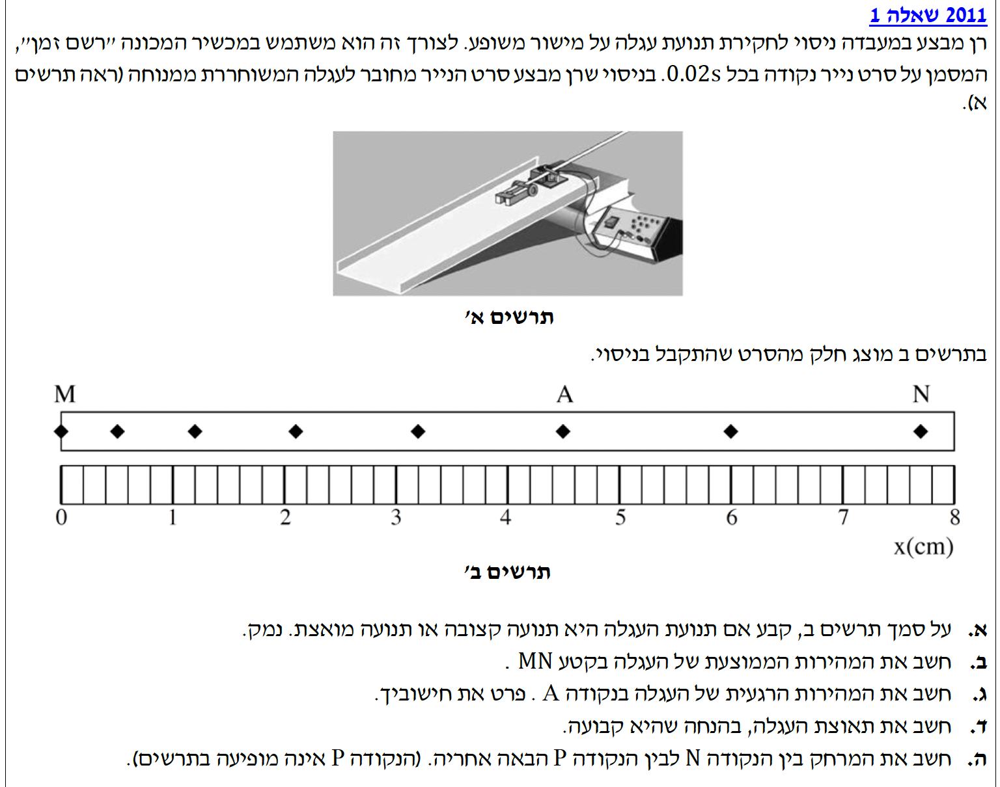

מהשאלה ידוע כי סרט הקצב מסמן נקודה בכל פרק זמן קבוע של \( \Delta t = 0.02\text{ s} \). מתרשים ב' אנו יכולים לראות את המרחק בין כל שתי נקודות עוקבות על גבי הסרגל.
לקבוע האם תנועת העגלה היא תנועה קצובה (במהירות קבועה) או תנועה שיש לה תאוצה (תנועה מואצת), ולנמק.
נתבונן בתרשים המציג את סרט הנייר. המרווחים הפיזיים (העתקים, \( \Delta x \)) בין הנקודות העוקבות הולכים וגדלים ככל שמתקדמים לאורך סרט הנייר מהנקודה M אל עבר הנקודה N. מכיוון שפרק הזמן \( \Delta t \) בין כל שתי נקודות הוא קבוע ושווה ל-\( 0.02\text{ s} \), הגדלת המרחק מחייבת כי גודל המהירות הממוצעת בכל קטע עוקב הולך וגדל. כאשר גודל המהירות משתנה עם הזמן, הרי שלגוף יש תאוצה.
מתוך קריאה מדוקדקת של סרגל המדידה בתרשים ב' וספירת הנקודות:
מיקום התחלתי בנקודה M: \( x_M = 0\text{ cm} \Rightarrow x_M = 0\text{ m} \).
מיקום סופי בנקודה N: ספירת השנתות מראה ש-N נמצאת ב-7.7 ס"מ, כלומר \( x_N = 0.077\text{ m} \).
פרק הזמן הכולל: לאורך הסרט ישנן 8 נקודות מ-M עד N (כולל). בין 8 נקודות ישנם בדיוק 7 מרווחי זמן (קפיצות). לכן: \( \Delta t_{MN} = 7 \cdot 0.02\text{ s} = 0.14\text{ s} \).
את גודל המהירות הממוצעת \( \overline{v} \) לאורך כל קטע התנועה מהנקודה M עד לנקודה N.
נציב את הנתונים שהמרנו ליחידות התקניות לתוך נוסחת המהירות הממוצעת:
נקודה A היא הנקודה החמישית (אחרי M). כדי לחשב את המהירות הרגעית בה בדיוק רב, ניקח את הנקודה שלפניה (נקודה 4) ואת הנקודה שאחריה (נקודה 6).
מקריאת המיקומים על הסרגל עולה כי:
מיקום נקודה 4: \( x_4 = 3.2\text{ cm} \Rightarrow 0.032\text{ m} \).
מיקום נקודה 6: \( x_6 = 6.0\text{ cm} \Rightarrow 0.060\text{ m} \).
פרק הזמן הכולל בין נקודה 4 לנקודה 6 מכיל שני מרווחים, לכן: \( \Delta t = 2 \cdot 0.02\text{ s} = 0.04\text{ s} \).
את המהירות הרגעית \( v_A \) ברגע שבו העגלה עברה בנקודה A.
בתנועה שוות-תאוצה מתקיים הכלל: המהירות הרגעית בדיוק באמצע הזמן שווה למהירות הממוצעת של אותו קטע.
כיוון שנקודה A (הנקודה החמישית) מתרחשת בדיוק באמצע פרק הזמן שבין נקודה 4 לנקודה 6, נוכל לחשב את המהירות הממוצעת בקטע זה, והיא תהיה שווה למהירות הרגעית בנקודה A.
המחשה של 7 המרווחים ההולכים וגדלים, וקטורי המהירות המתארכים, והתאוצה הקבועה בכיוון התנועה.
נתון שהתאוצה קבועה. כדי לחשב אותה באופן המדויק ביותר, נחשב שתי מהירויות רגעיות בזמנים ידועים.
את המהירות בנקודה A (הנקודה החמישית) כבר חישבנו: \( v_A = 0.7\text{ m/s} \).
כעת נחשב את המהירות בנקודה 6 (נקרא לה \( v_6 \)) בעזרת הנקודה שלפניה (A, מיקום \( 4.5\text{ cm} \)) והנקודה שאחריה (N, מיקום \( 7.7\text{ cm} \)).
פרק הזמן בין A ל-N הוא שני מרווחים: \( \Delta t_{AN} = 0.04\text{ s} \).
לאחר שנמצא את שתי המהירויות (\( v_A \) ו-\( v_6 \)), נחשב את התאוצה. פרק הזמן החולף בין נקודה A (החמישית) לנקודה 6 הוא מרווח שעון אחד, כלומר \( \Delta t_{A \rightarrow 6} = 0.02\text{ s} \).
את גודל תאוצת העגלה \( a \).
ראשית, נחשב את המהירות הרגעית בנקודה 6:
כעת, נציב בנוסחת התאוצה, כאשר השינוי בזמן בין המהירויות הוא \( \Delta t = 0.02\text{ s} \):
נפתור סעיף זה על ידי הסתכלות על תנועת העגלה מראשית הצירים.
נקבע את נקודה M כראשית המקום והזמן: \( x_0 = 0\text{ m} \) , \( t_0 = 0\text{ s} \).
מהירות התחלתית (\( v_0 \)): העגלה כבר נעה כאשר הודפסה הנקודה M. נמצא את מהירותה בעזרת נקודה A (הנקודה החמישית, \( t_A = 0.1\text{ s} \)):
\( v_A = v_0 + at \Rightarrow 0.7 = v_0 + 5 \cdot 0.1 \Rightarrow v_0 = 0.2\text{ m/s} \).
תאוצת העגלה: \( a = 5\text{ m/s}^2 \).
הזמן עד לנקודה N (7 מרווחים מ-M): \( t_N = 7 \cdot 0.02 = 0.14\text{ s} \).
הזמן עד לנקודה P (8 מרווחים מ-M): \( t_P = 8 \cdot 0.02 = 0.16\text{ s} \).
את המרחק שעברה העגלה בין נקודה N לנקודה P, כלומר את ההפרש במיקומים: \( x_P - x_N \).
ראשית, נציב את הזמן של נקודה P (\( t = 0.16\text{ s} \)) כדי למצוא את מיקומה ביחס ל-M:
את מיקומה של נקודה N אנו כבר יודעים (\( 7.7\text{ cm} = 0.077\text{ m} \)), ולכן נחשב את ההפרש ביניהן: